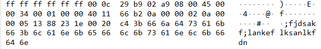
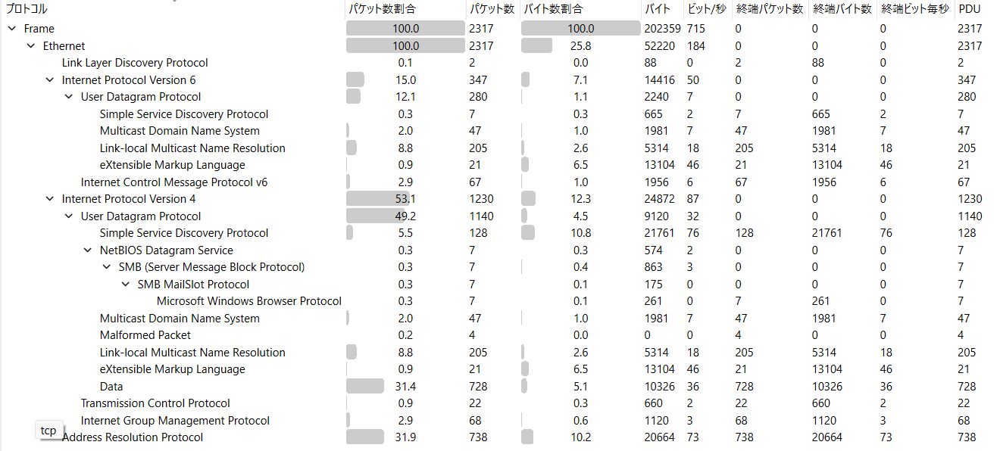

shark on wire 1
writeup
1
まず、shark-on-wire-1-capture.pcapをWiresharkで開く。 PCAPとは、ネットワーク上で送受信されたパケットを記録したファイルである。
2
Wiresharkの表示フィルタに以下を入力する。 udp なぜUDPか？
3
UDPパケットを確認すると、以下のような情報がある。
Source Port
Destination Port
Length
Checksumこの中でも、今回はDestinaition Port(宛先ポート)に注目する。 調べていくと、8888ポートを使用している。 そこで次のフィルタを使用する。 udp.dstport == 8888 これによって、 UDPで宛先ポート8888に送られた通信だけを表示することができる。
4
udp.dstport == 8888で絞り込んだパケットを確認する。 パケットを選択し、Packet Details からUDPを展開すると、Dataを確認できる。 ここで、パケットごとに文字データが入っていることがわかる。 つまり、
パケット1 → 1文字目
パケット2 → 2文字目
パケット3 → 3文字目
...というように、複数のパケットを使って文字列を送信していると考えられる。
5
udp.dstport == 8888だけでは、複数の宛先に送られた通信が表示される。そこで、Destination IPを確認する。 Flagが送られている通信の宛先IPに絞るため、 以下のようなフィルタを使用する。 udp.dstport == 8888 && ip.dst == 10.0.0.12 これによって、 UDP → 宛先ポート8888 → 宛先IP 10.0.0.12 という条件を満たす通信だけを見ることができる。
6
残ったパケットのDataを、パケットの順番に確認するとflagが得られる。
学び

これはWiresharkのパケットバイトの表示だね。 簡単に言うと、ネットワークパケットを16進数と文字にして表示しているものです。
今回の画像を左から見ていくと、こんな構造になっています。 ### 1 ff ff ff ff ff ff これは宛先MACアドレス。 MACアドレスとは、ネットワークインターフェースに割り当てられる識別子です。 ですが今回のMACアドレスは普通のではないです。 これはブロードキャストMACアドレスです。 同じLANにいる全員に送るといういみです。
2.送信元MACアドレス
00 0c 29 b9 02 a9 これは送信元MACアドレスです。 文字通り送信元の機器を表すアドレス。
3.IPアドレス
MACアドレスの次に、今度はIPアドレスが登場する。 上の画像では45 00 00 4f ... からIPv4ヘッダが始まっている。(IPv4 = IPという通信ルールのバージョン4)
IPv4では、
Source IP
Destination IPという情報を持っています。
MACとIPの違い |MACアドレス|この機器は誰？| |IPアドレス|この機器はネットワーク上のどこ？|
4.ポート番号
同じネットワーク内の機器のどの通信に届けるのかを表すもの。 私はこれだけじゃピンとこないのでここに具体例を書く。
1台のPCでWebサーバーとSSHサーバーが同時に動いてるとする。 別のPCから、Webページを見たい場合 192.168.1.10 : 80 にデータを送る。 これは、つまり、 192.168.1.10というPCの、80番ポートで待っているWebの通信に届けて！となる。
SSHで接続したい場合 192.168.1.10 : 22に送る。 今度は、 192.168.1.10というPCの、22番ポートで待っているSSHの通信に届けて！となる。
5.その他

統計 → プロトコル階層を開くと、今開いているpcapファイルのプロトコル階層を見ることができる。 上の画像でどの部分を見ればいいかを書きます。なぜなら僕は初心者だから
一番見るべきなのはパケット数 一回何が何なのかわからないから上から順に書き出してみる。 | プロトコル | 内容 | | — | — | | Frame | Wiresharkが記録した1回分のデータ | | Ethernet | LAN内でデータを送るための通信規格 | | Link Layer Discovery Protocol | ネットワーク機器同士が、自分の情報を知らせるためのプロトコル | | Internet Protocol Version 6 | IPv6アドレスを使って通信するための仕組み | | User Datagram Protocol | データを素早く送る通信方式 | | Simple Service Discovery Protocol | ネットワーク上の機器やサービスを探すためのプロトコル | | Multicast Domain Name System | 同じネットワーク内で機器名などの名前解決する仕組み | | Link-local Multicast Name Resolution | 同じネットワーク内でコンピュータ名をIPアドレスに変換するための仕組み | | eXtensible Markup Language | データを構造化して表現するための形式 | | Internet Control Message Protocol v6 | IPv6の通信状態の確認やエラー通知などに使われるプロトコル | | Internet Protocol Version 4 | IPv4アドレスを使って通信するための仕組み | | User Datagram Protocol | データを素早く送る通信方式 | | NetBIOS Datagram Service | ネットワーク上でNetBIOSのデータグラム通信を行うための仕組み | | SMB (Server Message Block Protocol) | Windowsネットワークなどでファイルやプリンターなどを共有するためのプロトコル | | SMB MailSlot Protocol | SMB上でメッセージを送受信するための仕組み | | Microsoft Windows Browser Protocol | Windowsネットワーク上のコンピュータを発見するためのプロトコル | | Multicast Domain Name System | 同じネットワーク内で機器名などを名前解決する仕組み | | Malformed Packet | 正常な形式として解析できなかったパケット | | Link-local Multicast Name Resolution | 同じネットワーク内で名前解決を行う仕組み | | eXtensible Markup Language | データを構造化して表現するための形式 | | Data | 特定のプロトコルとして判別できなかったデータ | | Transmission Control Protocol | データが正しく届いたか確認しながら通信する方式 | | Internet Group Management Protocol | IPv4のマルチキャスト通信を管理するプロトコル | | Address Resolution Protocol | IPアドレスからMACアドレスを調べるプロトコル |